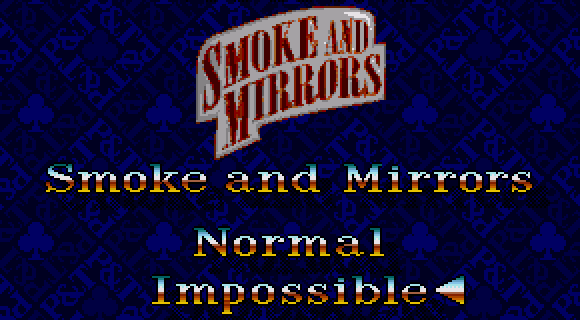
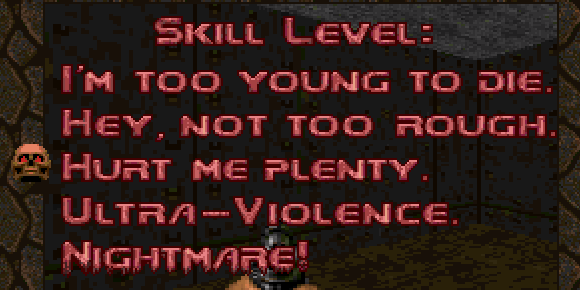
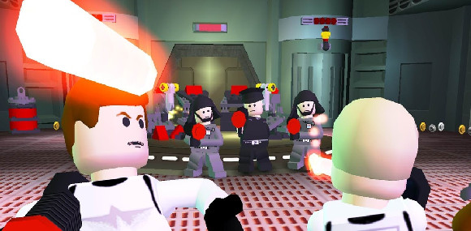

Modes de difficulté et ajustement dynamique de la difficulté
L'article original est écrit par Ernest Adams publié par Gamasutra (mai 2008).
L'auteur original n'est en aucun cas reponsable de la précision de cette traduction.
Je viens de finir un livre intitulé Interactive Storytelling, par Andrew Glassner. Bien que les premières centaines de pages constituent une introduction utile à la narration et au game design (pour les débutants, du moins), le livre a de sérieux défauts et je ne peux pas vraiment vous le recommander. Mais en cours de route, Glassner fait des digressions sur divers sujets, dont les modes de difficulté réglables. Il est contre. Il pense qu'ils devraient être bannis.
Je me suis arrêté net quand j'ai lu ça. Mon opinion se situe à l'exact opposé : les modes de difficulté réglables devraient être obligatoires dans la plupart des jeux. En fait, je considère l'absence de modes de difficulté réglables comme une TDC (NDT : voir la rubrique « Pas de biscuit ! »), à l'exception de quelques types de jeux pour lesquels ils ne sont pas adéquats. Dans la mesure où j'y suis tellement attaché, j'étais particulièrement intéressé par les arguments de Glassner à leur sujet. J'y ai jeté un œil et je vais essayer d'y répondre, avant de parler de son alternative favorite, l'ajustement dynamique de la difficulté (aussi connu sous le nom de difficulté adaptative).
Voici les arguments de Glassner contre les modes de difficulté réglables.
Le joueur doit décider trop tôt. La plupart des jeux demandent aux joueurs de choisir un niveau de difficulté dès le début, c'est-à-dire à un moment où il ne connait pas véritablement la difficulté du jeu puisqu'il n'y a pas encore joué.
Ma réponse : Ceci n'est pas vraiment un argument contre le réglage de la difficulté. Un jeu pourrait très bien donner la possibilité au joueur de faire un niveau d'entraînement réglé à la difficulté moyenne, puis permettre au joueur de décider s'il veut que le reste du jeu soit plus facile, plus dur ou du même acabit. Mais même sans cela, de nombreux joueurs peuvent deviner ce qu'il en est en raisonnant sur leur expérience avec des jeux du même type (je sais que je suis nul aux jeux de plates-formes) ou peuvent choisir un niveau de difficulté pour d'autres raisons. Je commence toujours les jeux en mode facile parce que je suis très occupé et que je veux voir un maximum du jeu en un minimum de temps. D'un autre côté, les hardcore gamers qui tiennent à montrer leur testostérone commenceront tous les jeux au niveau le plus difficile ; c'est comme ça qu'on peut se la ramener.

Les options sont trop grossières. Que faire si le mode moyen est trop facile mais le mode difficile est trop dur ? Les catégories sont trop largement espacées.
Ma réponse : il n'y a pas de raison pour qu'une difficulté ajustable par le joueur se limite à trois ou quatre options ; il peut s'agir d'une jauge. En fait, n'importe quel jeu bien conçu fait varier son rythme indépendamment du mode de difficulté et présente des passages faciles et des passages difficiles. Même les jeux d'arcade donnent au joueur la possibilité de souffler de temps à autres. Le réglage de difficulté n'est pas censé déterminer la difficulté d'absolument chaque épreuve, mais seulement les maxima et minima de cette difficulté à n'importe quel moment du jeu. J'estime qu'il ne s'agit pas d'une raison suffisante pour les interdire. J'ai néanmoins une exigence : le mode facile est censé être facile (NDT : bordel). Si facile que vous devez pouvoir gagner le jeu en frappant votre clavier avec votre front et en faisant glisser la souris avec votre coude. Si ce n'est pas le cas, le designer a d'une manière ou d'une autre échouer à comprendre ce que veut dire le mot « facile ».
Les modes de difficulté sont trop vastes, ce par quoi Glassner entend que les réglages de difficultés s'appliquent généralement à tous les différents types de challenges dans un jeu, alors qu'un joueur pourrait être un bon dans un domaine, comme le tir, mais mauvais dans un autre, comme la conduite. Quel réglage devrait-il choisir ?
Ma réponse : il s'agit sans aucune doute de l'argument le plus fort de Glassner et il mérite que je m'y attarde. Tout d'abord, son objection ne s'applique pas nécessairement à tous les genres de jeux. De nombreux jeux se concentrent sur un petit nombre de challenges différents — Tetris, par exemple. D'un autre côté, dans un jeu complexe comme Civilization, le réglage de la difficulté ne s'applique pas à des challenges en particuliers mais à l'ensemble du jeu d'une façon plus générale. Vos adversaires sont juste plus intelligents, plus méchants, plus riches et plus rapides que vous. Dans ce genre de jeux, le fait que les modes de difficultés soient généraux ne pose pas de problème.
Ceci nous laisse les jeux avec des challenges hétérogènes et nettement séparés. Les jeux de plate-formes et les TPS nous fournissent les exemples les plus évidents. Je suis bon en tir, mais quand il s'agit de mouvements acrobatiques, du type sauter au dessus d'un précipice ou se balancer sur des cordes, je suis désespérément nul. Alors comment faire ? Eh bien, tout d'abord, nous pouvons mettre en place des réglages différents pour des types de difficulté différents. Weird Worlds : Return to infinite Space comprend deux réglages pour la difficulté, l'un pour le mode stratégique (voyager à travers la galaxie) et l'autre pour le mode tactique (les combats de vaisseaux). Mais même si je ne veux pas me donner toute cette peine, je crois qu'un joueur choisit un niveau de difficulté principalement en pensant au niveau de difficulté maximum qu'il rencontrera sur l'ensemble du jeu. Quand je choisis le mode facile, j'ai besoin de savoir que tout sera facile dans le jeu, que rien ne sera plus dur qu'un certain maximum. De la même façon, le joueurs ne s'attendent pas à ce qu'à réglage fixé, tous les challenges d'un jeu aient la même difficulté. Un mode cauchemar ne garantit pas qu'absolument que tout passage du jeu sera cauchemardesque et en fait, les joueurs de shoot protesteraient avec véhémence s'ils se rendaient compte qu'en mode cauchemar, ils devaient se traîner sur une canne et prendre dix secondes pour recharger.
Pour faire court, Glassner a raison lorsqu'il dit qu'on ne peut pas garantir qu'à réglage donné, tous les challenges aient la même difficulté pour tous les joueurs. Mais je ne pense pas non plus que ce soit ce que les joueurs attendent.

Les modes de difficulté sont définitifs, c'est-à-dire qu'un réglage de difficulté ne s'adapte pas à la progression du joueur, tout particulièrement s'il n'est pas autorisé à le changer. La courbe de difficulté, quel que soit le réglage, peut se révéler trop plate ou trop raide pour le joueur.
Ma réponse : c'est indéniablement l'une des faiblesses de tous les jeux qui n'implémentent pas un ajustement dynamique de la difficulté. Les niveaux de difficulté réglables ne créent pas ce problème, ils aident à l'alléger un peu. Un mode facile propose une augmentation très lente de la difficulté, alors qu'un mode difficile propose une augmentation brutale de celle-ci (parfois décrit par le terme « steep learning curve »). Les joueurs le savent et choisissent en conséquence. Il est vrai que la difficulté ne s'ajuste pas d'elle-même, mais c'est toujours mieux que rien.
Ils sont trop généraux, ce qui est une reformulation de l'argument sur leur caractère trop « vaste ». Glassner fait remarquer que de nombreux jeux introduisent au fur et à mesure de nouveaux types d'action, ce qui nécessite de nouvelles compétences. Le joueur peut être meilleur pour certaines que pour d'autres. Dans la mesure où le joueur ne sait pas de quelles compétences on va lui demander de faire preuve, il pourrait regretter son choix lors de l'introduction d'un nouveau type d'action.
Ma réponse : encore une fois, j'ai l'impression que la plupart des joueurs veulent une idée globale de la difficulté maximale qu'ils vont rencontrer, et non pas une garantie que tous les challenges du jeu seront d'égale difficulté. Et franchement, c'est pour ça que nous avons des tests et des guides de jeux. Si vous voulez savoir ce à quoi vous devez vous attendre dans la suite du jeu (« Attention, dans le niveau 5, vous aurez à piloter un hélicoptère »), il y a moyen de se renseigner.
Pour faire court, bien que ces remarques méritent notre attention — et que leurs effets devraient être améliorés dans la mesure du possible — je pense qu'exiger le « bannissement » des niveaux de difficulté réglables de tous les jeux, c'est jeter le bébé avec l'eau du bain (NDT : sic). Et plus important, les objections de Glassner font l'impasse sur la plus importante de toutes les règles de game design : faire preuve d'empathie vis-à-vis du joueur, c'est-à-dire lui donner ce qu'il veut. Les joueurs veulent des niveaux de difficulté réglables et enlever ces derniers sur la base d'un argumentaire purement théorique ne constitue pas une bonne façon de se mettre au service de son public.
Glassner conclut cette discussion en disant : « Les jeux ne devraient pas demander aux joueurs de sélectionner un niveau de difficulté. Les jeux devraient s'adapter au fur et à mesure afin d'offrir au joueur un niveau de challenge cohérent basé sur ses capacités dans différents domaines. » En d'autres termes, ils devraient présenter un ajustement dynamique de la difficulté, ce que j'appellerai ADD à partir de maintenant (parce que l'ADD est aussi appelée difficulté adaptative, ce qu'on confond parfois avec intelligence artificielle adaptative. L'intelligence artificielle adaptative est une façon de mettre en place un ADD, mais c'est un sujet bien trop compliqué pour cet article).
L'ADD existe depuis des décennies. Le plus vieil exemple que je puisse trouver est le jeu Astrosmash d'Intellivision, un clone du classique Asteroids d'Atari. Astrosmash devenait de plus en plus dur dans un style de jeu typiquement arcade, mais il prenait aussi en compte les moments où vous manquiez de vies et redevenait plus facile pour un moment. Même les débutants pouvaient y joueur pour un bon bout de temps, ce qui l'a rendu très populaire. Dans la mesure où ce n'était pas un jeu payant, les designers n'avaient aucune raison d'essayer de faire perdre le joueur rapidement.
J'aime le principe d'un ajustement dynamique de la difficulté, parce que cela me parle en tant que programmeur. Ce serait vraiment intéressant de coder un jeu suffisamment intelligent pour ajuster les challenges qu'il propose en fonction des capacités du joueur, de façon à garantir qu'il passe un bon moment. Mais malgré la confiance que Glassner place dans l'ADD, je dois aussi reconnaître qu'il n'est pas nécessaire de l'implémenter.
Jetons un œil à certains problèmes de l'ADD :
Certains joueurs détestent ça. C'est la première raison de réfléchir à deux fois avant d'implémenter un ADD, tout particulièrement s'il ne peut pas être désactivé. De nombreux joueurs se sentent infantilisés quand ils découvrent que le jeu devient plus facile quand ils ont du mal et ils ne veulent pas que le niveau de difficulté change du tout. Pour eux, c'est dans la difficulté que réside le plaisir, même si cela signifie qu'il leur faudra mourir 500 fois avant de parvenir au succès.
Les joueurs peuvent apprendre à exploiter l'ADD en faisant semblant d'être moins qu'ils ne sont réellement. C'est comme si vous faisiez croire à votre adversaire que vous êtes un novice et que dès que son argent est sur la table vous le massacriez. C'est l'un des arguments contre l'ADD le plus évoqué parmi les joueurs et les designers professionnels. Personnellement, je n'ai pas de gros problème avec ceci parce que je ne tiens pas à rendre les choses difficiles pour les joueurs qui jouent à mes jeux. Mais ils ont raison dans la mesure où ceci transforme le jeu et peut le reprendre gravement déséquilibré en mode multijoueurs.
L'ADD ne fonctionne pas pour tous les types de challenges. Si les challenges dans un jeu sont basés sur des grandeurs numériques — points de vie, argent, vitesse, etc. — alors il est plutôt facile d'ajuster dynamiquement ces valeurs pour changer la difficulté. Mais qu'en est-il d'entités symboliques ? La plupart des énigmes ont une difficulté fixée au départ et il n'est pas facile de la changer en cours de route. Si je dois devenir le bon ordre pour activer les interrupteurs et ouvrir la porte de la salle du trésor, cela prendra une quantité faramineuse de code supplémentaire pour fournir différentes solutions à cette énigme — et à toutes les autres dans le jeu — en fonction du niveau du joueur. Les énigmes exigeant une forme de pensée latérale, comme le pneu-en-caoutchouc-plus-cactus-égale-lance-pierres d'un des Monkey Island, ne peuvent avoir qu'une solution : il n'y a pas de façon de rendre l'énigme plus simple à moins de la supprimer purement et simplement. Cette objection s'applique de même aux niveaux de difficulté réglables, ce pourquoi les jeux d'aventure les implémentent rarement. Ceci montre néanmoins que l'ADD n'est pas une solution universelle au problème de l'équilibrage de la difficulté.
L'ADD peut créer des absurdités. Dans certains jeux de course, si vous avez un accident, le jeu ralentit les autres joueurs de façon à vous donner une chance de les rattraper. C'est là qu'intervient le fameux effet « élastique » : si vous êtes trop en avance, vos adversaires finissent toujours par vous rattraper et si vous êtes trop en retard, ils ralentissent toujours. Cela donne l'impression que votre voiture et celles de vos adversaires sont attachées par des bandes de caoutchouc. C'est absurde et les joueurs le savent. Ce genre de chose convient pour un jeu léger comme Beetle Adventure Racing, mais c'est hors de question pour une simulation de course sérieuse. Un mécanisme d'ADD doit intervenir d'une façon logiquement et émotionnellement cohérente avec l'univers du jeu.
L'ADD rend caduc un bon level design. Un hypothétique système d'ADD qui fonctionnerait parfaitement et maintiendrait tous les challenges d'un jeu au même niveau ruinerait le rythme de ce jeu. Ce serait comme écouter une symphonie de Beethoven où toutes les notes seraient jouées exactement au même volume ou vous promenez dans un musée avec des lunettes de couleur. Un niveau bien conçu, avec ses variations émotionnelles, est une œuvre d'art en soi et mérite d'être apprécié comme tel.
Je ne suis pas opposé à l'utilisation de l'ADD en toutes circonstances : comme avec presque tout ce qui a trait au game design, l'ADD a ses forces et ses faibles. Je pense que c'est une idée brillante pour des jeux simples, abstraits et casual comme Astrosmash, mais plus les différents challenges d'un même jeu sont hétérogènes, plus il est difficile d'élaborer un système d'ADD qui les prennent tous en charge.
Tout système d'ADD nécessite un mécanisme d'évaluation des performances et un mécanisme d'ajustement pour chaque type de challenge sur lequel il opérera. Le mécanisme d'évaluation des performances détermine à quel point un joueur est bon pour un certain type de challenge et le mécanisme d'ajustement rend ce challenge plus ou moins difficile, dans la plupart des cas en modifiant les paramètres qui définissent la difficulté du challenge (comme la force d'un ennemi). Dans Astrosmash, l'évaluation de la performance était très simple : le jeu regardait le nombre de vies restantes. Vous pouvez facilement faire la même chose avec des points de vie, de l'argent ou toute autre ressource nécessaire à la survie du joueur. Robin Hunicke a fait des recherches pratiques sur le sujet en utilisant un mod d'Half-Life : vous pouvez aller voir son article « The Case for Dynamic Difficulty Adjustment in Games. » (il vous faudra un accompte ACM pour télécharger le .pdf).
Si vous voulez absolument utiliser l'ADD, prenez en considération les suggestions suivantes :
Rendez le jeu plus dur en renforçant les adversaires et non en affaiblissant le joueur. Les joueurs ont à juste titre le sentiment que les pouvoirs dont ils disposent dans un jeu, ils les ont mérités. N'enlevez jamais de façon arbitraire un avantage au joueur : s'il perd quelque chose qu'il avait gagné, il doit y avoir une raison pour cela. Il est acceptable de rendre l'intelligence artificielle plus chanceuse, mais pas de rendre le joueur plus malchanceux. S'il s'en sort bien et qu'il se rend soudain compte que son fusil sniper ne tire plus droit, il va vous haïr.
Rendez l'ADD optionnel, comme dans Lego Star Wars II. De cette façon, les joueurs qui n'aiment pas l'ADD pourront le désactiver. *Lego Star Wars II proposait à la fois un ADD et des niveaux de difficulté réglables, mais tout le monde ne peut pas se permettre d'y consacrer autant de travail.

Soyez subtils. Je n'insisterai jamais assez là-dessus. Les monstres qui étaient faciles à battre au niveau 1 ne devrait pas soudainement devenir invincibles au niveau deux, ou inversement. Des changements trop brusques brisent l'immersion et créer des pics ou des puits dans la courbe de difficulté telle qu'elle est perçue par le joueur. Si c'est possible, ajustez la difficulté à travers de petits changements fréquents plutôt qu'à travers une seul gros changement, de façon à ce que le joueur ne se rende compte de rien.
Ne montrez pas au joueur le fonctionnement de l'ADD. Ne laissez pas les joueurs comprendre quel type de mécanisme d'évaluation vous utilisez, ni ce que le jeu fera pour rendre les jeux plus faciles. S'ils ne savent pas ça, les joueurs ne pourront pas exploiter le système si facilement.
L'ADD est difficile à implémenter, rend l'équilibrage d'un jeu complexe et il se peut même que votre joueur n'en veuille pas du tout. Réfléchissez soigneusement si vous voulez vous lancer dedans.
Ajouter un commentaire
Commentaires

Je ne pense pas que l'argument du Level Design soit valable.
Un ADD n'a pas pour but "d'aplanir" tout le jeu, de supprimer les moments faciles et les moments difficiles, mais plutôt d'augmenter et de diminuer la courbe globale du jeu, justement pour qu'un joueur incompétent et un joueur très compétent aient tous les deux l'impression que l'on veut donner au joueur moyen, c'est à dire l'alternance de passages difficiles (mais jamais impossibles) et de passages faciles (mais jamais impossibles à rater).
Je pense que l'argument des challenges non-progressifs est le plus dur pour les niveaux de difficultés comme pour l'ADD. Heureusement, c'est aussi le problème qu'une soluce peut facilement résoudre.
Reste le problème des joueurs qui préfèrent "lutter" avec le jeu (ou au contraire ne jamais avoir à lutter). J'avoue que je ne vois pas d'autre solution ici que de permettre de désactiver l'ADD. A moins d'envisager que le jeu propose des réussites qui ne soient pas binaires de type "gagne/perd", mais qu'on puisse gagner ou perdre plus ou moins violemment. Cela peut permettre de garder une forme de challenge, ou de non-challenge, mais complexifie encore la création du jeu, naturellement.